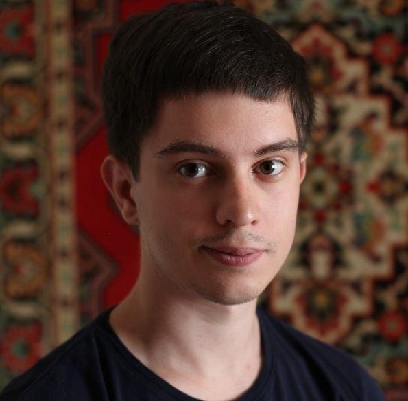
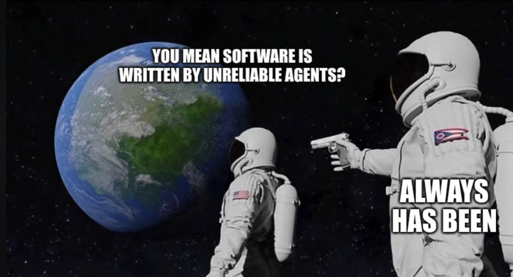
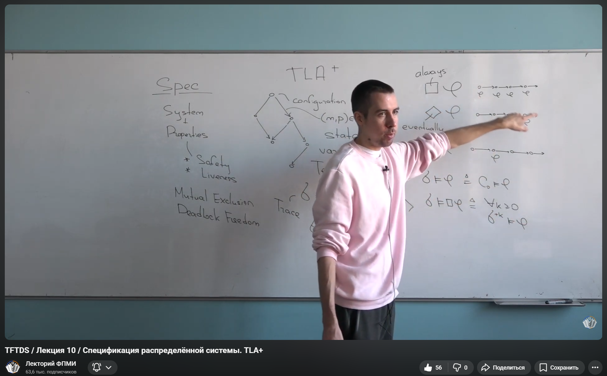
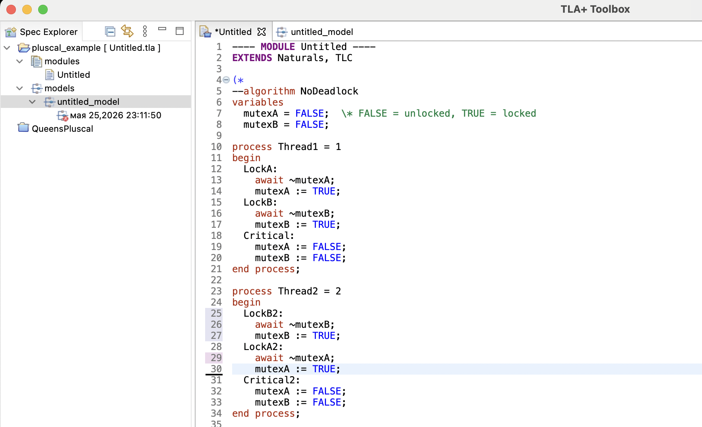
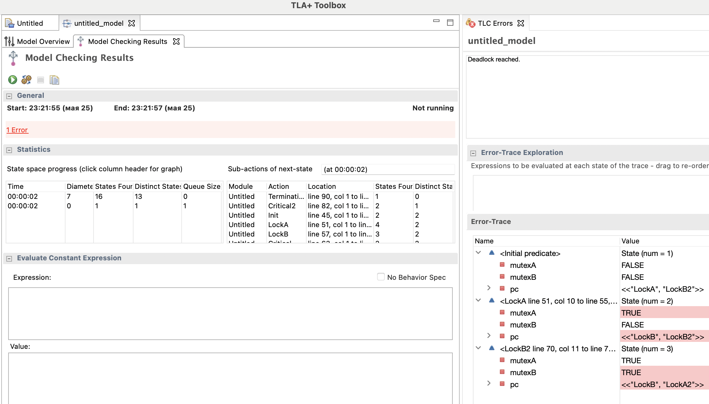
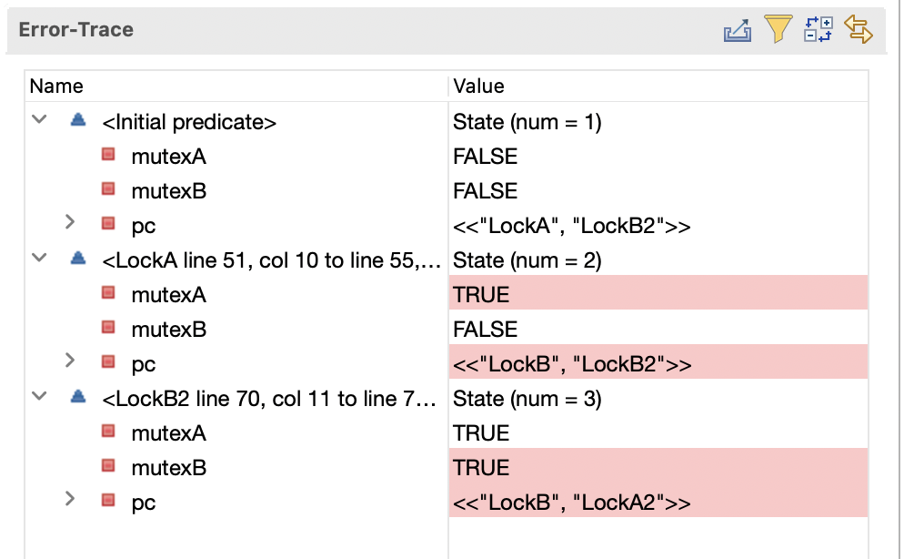

TLA+/Pluscal — от спецификации к математическому доказательству отсутствия ошибок
Иванин Виталий · E4 · команда SLA · 2026
Backend разработчик (E4) в команде SLA. Разрабатываю static-fallback, также частично помогаю с функционалом сценариев надежности и NFR.
Веду SRE community [~sre-coe]: мы ищем спикеров, пишите в ММ @vaivanin

Поставьте + / − в чат
*программа должна быть непустая и делающая что-то полезное
Можно!
Как — узнаете в конце доклада

Почему текущие инструменты недостаточны для проверки сложной логики
Вывод: Хочется найти инструмент, который алгоритмически гарантирует отсутствие ошибок в коде.
💡 Репозиторий: github.com/alloky/TLA_plus_basic_examples — можно самостоятельно запустить примеры в GoLand с плагином TLA+.
Плюс в чат, кто знает!
Человек, который дал нам инструменты для мышления о распределённых системах
Leslie Lamport
born 1941, New York City
Создал систему вёрстки, которую использует вся наука. А также \usepackage{lamport} для доказательств.
Алгоритм консенсуса — основа всех распределённых БД. "The Part-Time Parliament" — одна из самых цитируемых статей в CS.
TLA+ — язык спецификации распределённых систем. PlusCal — псевдокод, компилируемый в TLA+. Turing Award 2013.
ACM Turing Award 2013: fundamental contributions to the theory and practice of distributed and concurrent systems, notably the invention of concepts such as causality and logical clocks, safety and liveness, replicated state machines, and sequential consistency.
В отличие от тестов, которые проверяют некоторые сценарии, верификаторы анализируют все возможные состояния системы и гарантируют отсутствие багов в спецификации.
Разные инструменты для разных задач: от математических доказательств до модельной проверки
AWS: TLA+ использовали для верификации S3, DynamoDB, EBS — нашли критические баги до деплоя. Azure: Верифицировали консенсус-алгоритмы Cosmos DB.
Три кита модели: состояния, переходы и проверка инвариантов на всём графе
Значения всех переменных в конкретный момент. Например: mutexA = FALSE, mutexB = TRUE, pc = "LockB"
Каждая строка кода — это действие (action), меняющее состояние. Граф состояний = все возможные пути выполнения.
Утверждения, которые должны быть истинны в любом состоянии. Например: "не более одного потока в критической секции".
Пример: Два мьютекса A и B, два потока. Thread1 берёт A→B, Thread2 берёт B→A. Классический deadlock философов — но с двумя мьютексами.
Все возможные пути выполнения двух потоков с двумя мьютексами
Граф состояний программы с двумя потоками и двумя мьютексами. Красные пунктирные рёбра — пути к deadlock'у.

Подробное описание алгоритма работы чекера TLA+
от Романа Липовского (в рамках курса TFTDS, Лекториум ФПМИ, 2021 год).

Пример кода на Pluscal в TLA+ Toolbox

Model checker перебрал состояния (построил граф), нашел 13 уникальных состояний и нашел пример Deadlock'a (справа на скриншоте)

Error: Deadlock reached.
State (num = 3): mutexA = TRUE, mutexB = TRUE
Thread1: ждёт mutexB
Thread2: ждёт mutexA
Ни один процесс не может продвинуться.
TLC нашёл это за 0.03 секунды, перебрав 13 состояний.
Thread1: A→B, Thread2: B→A. Классическое зацикливание.
Thread1 — берёт A, потом B
variables
mutexA = FALSE;
mutexB = FALSE;
process Thread1 = 1
begin
LockA:
await ~mutexA;
mutexA := TRUE;
LockB:
await ~mutexB;
mutexB := TRUE;
Critical:
mutexA := FALSE;
mutexB := FALSE;
end process;Thread2 — берёт B, потом A
process Thread2 = 2
begin
LockB2:
await ~mutexB;
mutexB := TRUE;
LockA2:
await ~mutexA;
mutexA := TRUE;
Critical2:
mutexB := FALSE;
mutexA := FALSE;
end process;Результат: TLC находит deadlock — оба потока заблокированы, каждый ждёт мьютекс, который держит другой.
Оба потока берут мьютексы в одинаковом порядке: A→B. Иерархия ресурсов.
Thread1 — берёт A, потом B
variables
mutexA = FALSE;
mutexB = FALSE;
process Thread1 = 1
begin
LockA:
await ~mutexA;
mutexA := TRUE;
LockB:
await ~mutexB;
mutexB := TRUE;
Critical:
mutexA := FALSE;
mutexB := FALSE;
end process;Thread2 — тоже A→B
process Thread2 = 2
begin
LockA2:
await ~mutexA;
mutexA := TRUE;
LockB2:
await ~mutexB;
mutexB := TRUE;
Critical2:
mutexA := FALSE;
mutexB := FALSE;
end process;
Результат: TLC проверяет все 12 состояний — deadlock не найден. Invariant Termination выполняется.
Где формальная верификация вписывается в современный цикл разработки
Находим ошибки в логике до написания кода. Исправить спецификацию — 5 минут. Исправить баг в проде — часы простоя и репутационные потери.
Model Checker запускается в CI/CD. Если invariant нарушен — билд не проходит. Так же как unit-тесты, но проверяют все состояния.
Use of Formal Methods at Amazon Web Services
| System | Component | Lines | Lang | Result |
|---|---|---|---|---|
| S3 | Fault-tolerant low-level network algorithm | 804 | PlusCal | Found 2 bugs, further bugs in optimizations |
| S3 | Background redistribution of data | 645 | PlusCal | Found 1 bug + bug in first proposed fix |
| DynamoDB | Replication & group-membership system | 939 | TLA+ | Found 3 bugs, traces of 35 steps |
| EBS | Volume management | 102 | PlusCal | Found 3 bugs |
| Lock Mgr | Lock-free data structure | 223 | PlusCal | Improved confidence, missed liveness bug |
| Lock Mgr | Fault tolerant replication & reconfiguration | 318 | TLA+ | Found 1 bug, verified aggressive optimization |
Баги находят в проде → инциденты → hotfix → LSR → action items. Цикл: дни-недели. И не все баги воспроизводимы.
Баги находят на этапе спецификации → исправляем за минуты → код пишем уже с проверенной логикой. Гарантия: все состояния проверены.
Эволюция от академических исследований к production necessity в Big Tech
AWS — самый широкий портфель: TLA+ для дизайна, Dafny для security, Kani для Rust, DST для интеграции. Microsoft — Dafny, F* (Project Everest), Azure Cosmos DB TLA+. MongoDB — модульная TLA+ спецификация distributed transactions.
Автоматический поиск багов в распределённых системах
Что такое Antithesis
Платформа: Запускает вашу систему в симулированном окружении и ищет баги автоматически.
Ключевая идея: Не нужно писать спецификацию — система сама исследует пространство состояний.
Доклад: Will Willson рассказывает, как Antithesis нашла баги в MongoDB, CockroachDB и других системах.
Ссылки
"Мы нашли баги, которые существовали годами, за несколько часов работы Antithesis."
Перспективы: LLM пишет спецификацию, Model Checker верифицирует
Большие модели уже умеют переводить текстовое описание алгоритма в TLA+/PlusCal. Скоро это станет стандартом.
Идея Karpathy: LLM генерирует гипотезы, проверяет их автоматически, находит новые свойства системы без участия человека.
Формальной верификацией можно покрыть критически важный код: консенсус, distributed locks, state machines. Не весь код — но важный.
Вывод: Верификация не заменит тесты, но станет обязательным шагом для критических компонентов — как типизация для Python.
📚 Материалы:
Deadlock.tla, NoDeadlock.tla, Paxos.tla